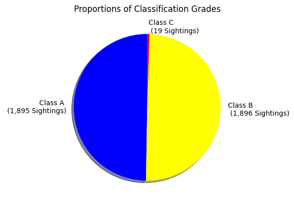
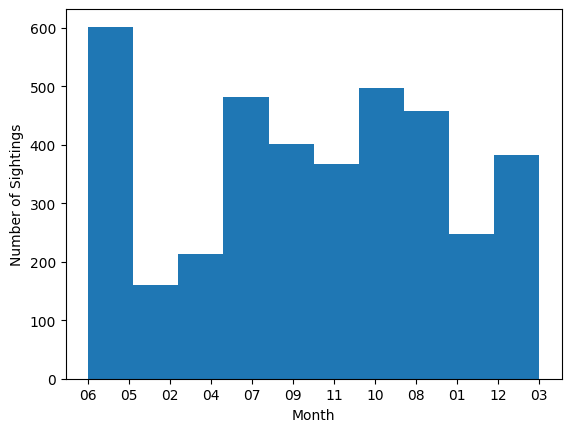
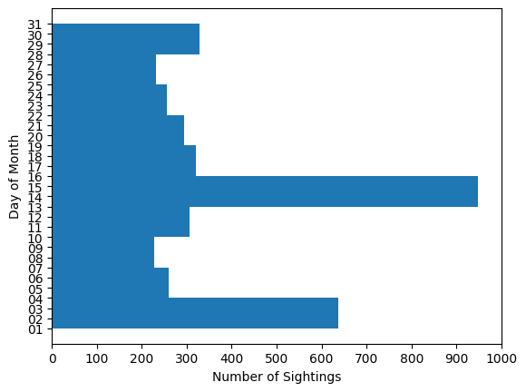

Javascript Charts
Below are three charts created using Javascript + Fetch API + Chart.js. Visit the Walkthrough page for more detailed info on how data was prepared.
The above chart is a pie chart depicting classifcation grade
data points as pie wedges.
From this, it can be observed that almost every sighting is
graded as Class A or Class B. An extremely slim portion of
sightings are graded as Class C. One might infer from this
that evidence of class C sightings aren't easily distinguished
from evidence produced by non-bigfoot fauna.
The above chart is a vertical histogram showing the number
of sightings recorded for each month of the year.
The above chart is a...
Here are the charts made from the same data as the Javascript charts but using Matplotlib.pyplot methods.
(click to view enlarged in new tab)

Python code:
wdg_labels = ["Class A \n (1,895 Sightings)",
"Class B \n (1,896 Sightings)",
"Class C \n (19 Sightings)"]
wdg_colors = ["blue", "yellow", "red"]
plt.pie(num_ea_grade, labels=wdg_labels, startangle=90,
colors=wdg_colors, shadow=True)
plt.title("Proportions of Classification Grades")
plt.show()
(click to view enlarged in new tab)

Python code:
plt.hist(grade)
plt.ylabel("Number of Sightings")
plt.xlabel("Classification of Each Sighting")
plt.yticks(range(0,1950,75))
plt.figure(figsize=(8,8))
plt.show()
(click to view enlarged in new tab)

Python code:
plt.hist(mm)
plt.xlabel("Month")
plt.ylabel("Number of Sightings")
plt.show()